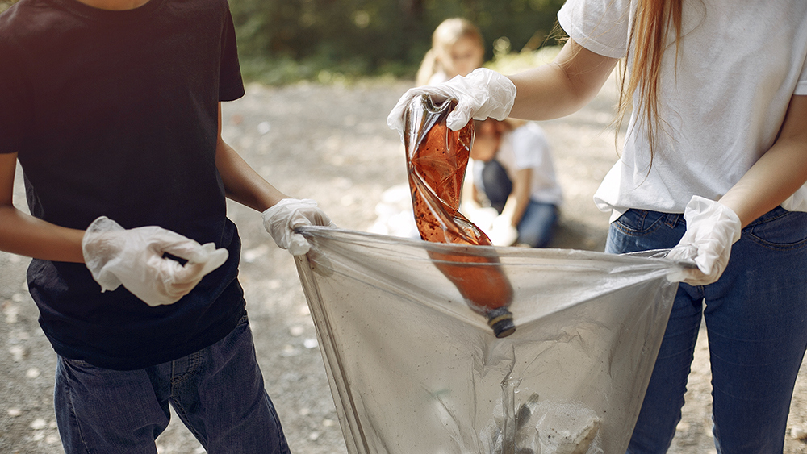
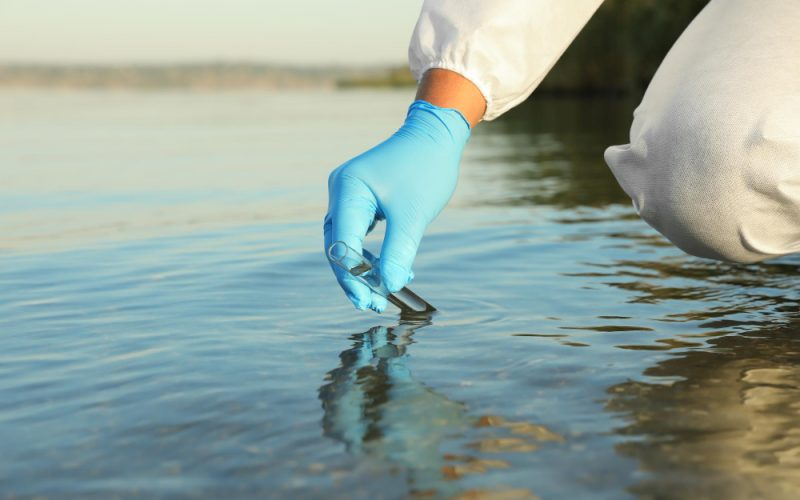

Recomandări


Pentru a proteja și conserva resursele de apă, atât pentru sănătatea umană, cât și pentru mediul înconjurător, este crucial să adoptăm practici și politici durabile. Iată câteva recomandări pentru protecția apelor:
Pentru indivizi:
- Economisirea apei: Reducerea consumului personal de apă poate reduce presiunea asupra resurselor de apă.
- Evitarea produselor poluante: Folosirea produselor de curățenie și a cosmeticelor biodegradabile poate reduce impactul deșeurilor chimice asupra apelor.
- Reciclarea și corectarea eliminării deșeurilor: Asigurarea că deșeurile sunt corect reciclate și eliminate poate preveni poluarea apei.
- Utilizarea rațională a pesticide și îngrășămintelor: Folosirea judicioasă a acestora poate minimiza riscul de eutrofizare și contaminare.
- Participarea la acțiuni locale de curățenie: Implicarea în inițiative de curățenie a plajelor și râurilor poate reduce poluarea.
Pentru comunități și autorități locale:
- Gestionarea durabilă a apelor uzate: Implementarea sistemelor de tratare a apelor uzate este esențială pentru prevenirea contaminării.
- Restaurarea și protejarea habitatelor acvatice: Conservarea malurilor și crearea zonelor umede pot ajuta la menținerea calității apei.
- Implementarea politicii de gestionare a apelor: Dezvoltarea și aplicarea unor politici eficiente pentru controlul poluării sunt esențiale.
- Promovarea surselor de energie regenerabilă: Reducerea dependenței de combustibili fosili poate reduce impactul asupra apelor.
- Educație și conștientizare: Campaniile de educație publică pot crește conștientizarea privind importanța apelor curate.
Pentru industrie și agricultură:
- Tehnologii de reducere a poluării: Implementarea tehnologiilor curate și eficiente poate minimiza impactul asupra apelor.
- Gestionarea apelor pluviale: Dezvoltarea infrastructurii pentru colectarea și utilizarea apelor pluviale poate reduce pierderile de apă.
- Agricultură durabilă: Promovarea practicilor agricole durabile poate reduce poluarea apei cu pesticide și îngrășăminte.
- Monitorizarea și raportarea: Industriile și agricultura ar trebui să fie supuse unor standarde stricte pentru monitorizarea impactului asupra apei.
Pentru guverne și organizații internaționale:
- Implementarea legislației și a standardelor: Guvernele ar trebui să pună în aplicare legislația privind protecția apelor și să stabilească standarde clare pentru calitatea apei.
- Cooperarea internațională: Cooperarea pentru gestionarea și protecția resurselor de apă este esențială, având în vedere că problemele nu cunosc granițe.
- Investiții în infrastructură: Investițiile în tratarea apelor uzate și în conservarea resurselor de apă sunt esențiale pentru asigurarea accesului la apă curată.
- Promovarea cercetării și inovației: Investițiile în cercetare pot aduce soluții inovatoare pentru protecția apelor.
Prin adoptarea acestor măsuri la nivel individual, comunitar, industrial și guvernamental, putem contribui la protejarea și conservarea apelor pentru generațiile viitoare. Este o responsabilitate comună și o investiție în sănătatea noastră și a mediului înconjurător.